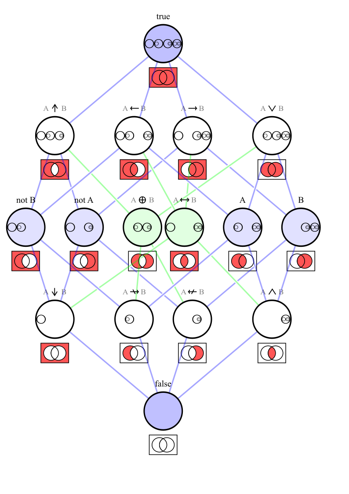

Logical Operators
For any two boolean variables, \(p\) and \(q\), each can take on of two truth values: True or False. Therefore, there are four possible combinations of truth values for \(p\) and \(q\).
| \(p\) | \(q\) | \(p \circ q\) |
|---|---|---|
| F | F | T or F |
| F | T | T or F |
| T | F | T or F |
| T | T | T or F |
For any logical operators acting on \(p\) and \(q\), the result can be one of two possibilities, i.e. True or False, for each of the 4 combinations of truth values. Since there are 4 possible combinations of \(p\) and \(q\), and the result of the logical operator can be either True or False for each combination, there are \(2^4 = 16\) possible distint ways to assign truth values for the result of the operator for each of the 4 combinations of \(p\) and \(q\).
The 16 operators can be viewed as all the possible ways to map the 4 input combinations \((p, q)\) to output truth values. These operators are not necessarily commonly used in typical logical expressions, but they are mathematically valid.
Here are typical logical operators:
| \(p\) | \(q\) | \(p \land q\) | \(p \lor q\) | \(p \to q\) |
|---|---|---|---|---|
| F | F | F | F | T |
| F | T | F | T | T |
| T | F | F | T | F |
| T | T | T | T | T |
Each of these operations is just one of the 16 possibilities, and you could define other logical operators that produce different truth tables. The 16 logical operators are important because they cover all possible ways to combine the truth values of \(p\) and \(q\).
From the table above, collect the output values of \(p \land q\) and write them as a string: FFFT. In binary notation, F is written as 0 and T as 1, giving 16 values from 0000 to 1111, which correspond to the decimal numbers 0 through 15.
The table below lists all 16 possible output values and the logical operations that produce each of them. The first two rows show the operands \(p\) and \(q\), followed by the 16 operators.
| Operation | Symbol | Gate | Boolean | Binary |
|---|---|---|---|---|
| p | \(p\) | FFTT | 0011 | |
| q | \(q\) | FTFT | 0101 | |
| Verum | \(\top\) | TTTT | 1111 | |
| Alternative denial | \(p \barwedge q\), \(p \uparrow q\) | NAND |
TTTF | 1110 |
| Material implication | \(p \to q\) | IMPLY |
TTFT | 1101 |
| not p | \(\lnot p\), \(\overline p\) | NOT |
TTFF | 1100 |
| Converse implication | \(p \leftarrow q\) | TFTT | 1011 | |
| not q | \(\lnot q\), \(\overline q\) | NOT |
TFTF | 1010 |
| Biconditional | \(p \leftrightarrow q\) | XNOR |
TFFT | 1001 |
| Joint denial | \(p \downarrow q\) | NOR |
TFFF | 1000 |
| Disjunction | \(p \lor q\) | OR |
FTTT | 0111 |
| Exclusive or | \(p \veebar q\), \(p \oplus q\) | XOR |
FTTF | 0110 |
| q | \(q\) | FTFT | 0101 | |
| Converse nonimplication | \(p \nleftarrow q\) | FTFF | 0100 | |
| p | \(p\) | FFTT | 0011 | |
| Material nonimplication | \(p \nrightarrow q\) | NIMPLY |
FFTF | 0010 |
| Conjunction | \(p \land q\) | AND |
FFFT | 0001 |
| Falsum | \(\bot\) | FFFF | 0000 |
Symbols
The table below lists the Unicode characters and LaTeX math symbols for each operation.
| Operation | Unicode | LaTeX | LaTeX command |
|---|---|---|---|
| p | \(p\) | ||
| q | \(q\) | ||
| Verum | ⊤ | \(\top\) | \top |
| Alternative denial | ⊼ | \(p \barwedge q\), \(p \uparrow q\) | \barwedge, \uparrow |
| Material implication | → | \(p \to q\) | \to, \rightarrow |
| not p | ¬ | \(\lnot p\) | \lnot, \neg |
| Converse implication | ← | \(p \leftarrow q\) | \leftarrow |
| not q | ¬ | \(\lnot q\) | \lnot, \neg |
| Biconditional | ↔ | \(p \leftrightarrow q\) | \leftrightarrow |
| Joint denial | ⊽ | \(p \downarrow q\) | \downarrow |
| Disjunction | ∨ | \(p \lor q\) | \lor, \vee |
| Exclusive or | ⊻ | \(p \veebar q\), \(p \oplus q\) | \veebar, \oplus |
| q | \(q\) | ||
| Converse nonimplication | ↚ | \(p \nleftarrow q\) | \nleftarrow |
| p | \(p\) | ||
| Material nonimplication | ↛ | \(p \nrightarrow q\) | \nrightarrow |
| Conjunction | ∧ | \(p \land q\) | \land, \wedge |
| Falsum | ⊥ | \(\bot\) | \bot |
Negation can also be written as an overline above the symbol, \(\overline{p}\) (\overline{p}), instead of operator notation like \(\lnot p\). This can be more compact and visually cleaner in some cases. However, for expressions like \(\lnot(p \land q)\), the overline notation becomes \(\overline{p \land q}\), which may look more complicated.
Equivalence
Consider expressions that are logically equivalent to one another. In the table below, the first column shows an operation on \(p\) and \(q\); the second column shows an equivalent expression when \(p\) is negated (\(\overline{p}\)); the third column when \(q\) is negated (\(\overline{q}\)); and the fourth column when both operands are negated.
| Operation | \(p \circ q\) | \(\overline{p} \circ q\) | \(p \circ \overline{q}\) | \(\overline{p} \circ \overline{q}\) |
|---|---|---|---|---|
| Verum | \(\top\) | |||
| Alternative denial | \(p \uparrow q\) | \(\overline{p} \leftarrow q\) | \(p \rightarrow \overline{q}\) | \(\overline{p} \lor \overline{q}\) |
| Material implication | \(p \rightarrow q\) | \(\overline{p} \lor q\) | \(p \uparrow \overline{q}\) | \(\overline{p} \leftarrow \overline{q}\) |
| not q | \(\overline{q}\) | |||
| Converse implication | \(p \leftarrow q\) | \(\overline{p} \uparrow q\) | \(p \lor \overline{q}\) | \(\overline{p} \rightarrow \overline{q}\) |
| not p | \(\overline{p}\) | |||
| Biconditional | \(p \leftrightarrow q\) | \(\overline{p} \oplus q\) | \(p \oplus \overline{q}\) | \(\overline{p} \leftrightarrow \overline{q}\) |
| Joint denial | \(p \downarrow q\) | \(\overline{p} \nrightarrow q\) | \(p \nleftarrow \overline{q}\) | \(\overline{p} \land \overline{q}\) |
| Disjunction | \(p \lor q\) | \(\overline{p} \rightarrow q\) | \(p \leftarrow \overline{q}\) | \(\overline{p} \uparrow \overline{q}\) |
| Exclusive or | \(p \oplus q\) | \(\overline{p} \leftrightarrow q\) | \(p \leftrightarrow \overline{q}\) | \(\overline{p} \oplus \overline{q}\) |
| q | \(q\) | |||
| Converse nonimplication | \(p \nrightarrow q\) | \(\overline{p} \downarrow q\) | \(p \land \overline{q}\) | \(\overline{p} \nleftarrow \overline{q}\) |
| p | \(p\) | |||
| Material nonimplication | \(p \nleftarrow q\) | \(\overline{p} \land q\) | \(p \downarrow \overline{q}\) | \(\overline{p} \nrightarrow \overline{q}\) |
| Conjunction | \(p \land q\) | \(\overline{p} \nleftarrow q\) | \(p \nrightarrow \overline{q}\) | \(\overline{p} \downarrow \overline{q}\) |
| Falsum | \(\bot\) |
Since the primitive operations of Boolean algebra are NOT, AND, and OR, logic treats these three as its basic operations as well. In each row of the table above, find an expression that uses only NOT, AND, and OR. Note that some rows have no such expression — identify which ones.
Among the equivalences visible in the table, the following are the ones that appear most often as important logical equivalences.
Implication:
Contrapositive:
De Morgan's laws:
The following double negation is also an important equivalence that does not appear in the table above.
Double negation:
The table above shows equivalences that each use only a single operator. Did you find the rows with no expression using only NOT, AND, and OR? They are biconditional and XOR. Expressed using only NOT, AND, and OR, they are as follows.
Biconditional:
XOR:
The following are important equivalences involving three operands.
Distributivity:
Absorption:
The following may seem obvious, but are widely used and very useful equivalences.
Exercises
Exercise 1
Explain each of the three equivalent formulas in natural language.
Exercise 2
| \(p\) | \(q\) | \(p \oplus q\) |
|---|---|---|
| F | F | F |
| F | T | T |
| T | F | T |
| T | T | F |
- (1) Find all rows where the result is T.
- (2) For each such row, write a conjunction of \(p\), \(q\), and their negations that is true exactly for that row.
- (3) Connect those conjunctions with \(\lor\) to form a single expression.
- (4) Verify that the result matches the XOR equivalence.
Exercise 3
| \(p\) | \(q\) | \(p \leftrightarrow q\) |
|---|---|---|
| F | F | T |
| F | T | F |
| T | F | F |
| T | T | T |
- (1) Find all rows where the result is T.
- (2) For each such row, write a conjunction of \(p\), \(q\), and their negations that is true exactly for that row.
- (3) Connect those conjunctions with \(\lor\) to form a single expression.
- (4) Verify that the result matches the biconditional equivalence.
Exercise 4
| \(p\) | \(q\) | \(p \to q\) |
|---|---|---|
| F | F | T |
| F | T | T |
| T | F | F |
| T | T | T |
- (1) Find all rows where the result is T.
- (2) For each such row, write a conjunction using \(p\), \(q\), and their negations that is true exactly for that row. For example, the row \(p = T, q = F\) gives \(p \land \lnot q\).
- (3) Connect those conjunctions with \(\lor\) to form a single expression.
- (4) Use the equivalences above to simplify the expression into \(p \to q\).
Exercise 5
Prove each of the following equivalences using the laws listed above.
- (1) \(\lnot(p \to q) \equiv p \land \lnot q\)
- (2) \((p \to q) \land (p \to r) \equiv p \to (q \land r)\)
- (3) \((p \to r) \land (q \to r) \equiv (p \lor q) \to r\)
- (4) \(p \to (q \to r) \equiv (p \land q) \to r\)
- (5) \(\lnot(p \leftrightarrow q) \equiv p \oplus q\)
- (6) \((p \lor q) \land \lnot(p \land q) \equiv (p \land \lnot q) \lor (\lnot p \land q)\)
Sets and Logical Operators
Consider two sets \(A\) and \(B\) inside a universe \(U\). In general, the two sets may overlap. Together they partition \(U\) into four regions. Choosing which regions to include and which to exclude yields \(2^4 = 16\) possible combinations.
The diagram below is called a Hasse diagram. At the bottom is the case where no region is selected; at the top, all regions are selected. The intermediate levels show cases where exactly one, two, or three regions are selected.
